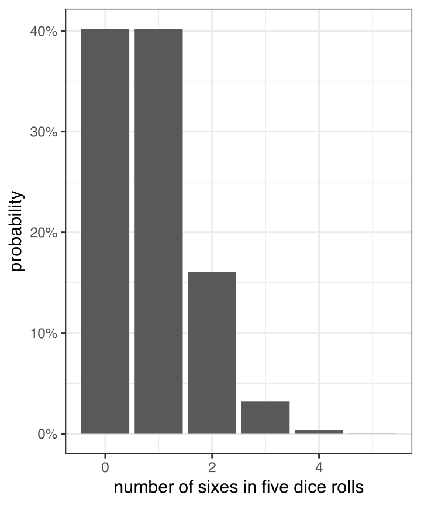
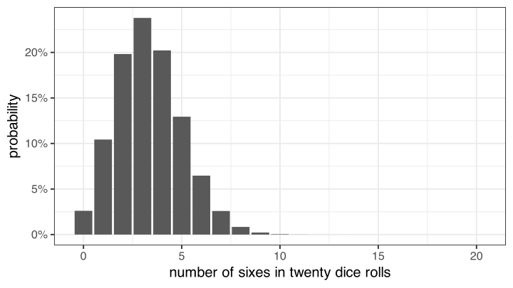
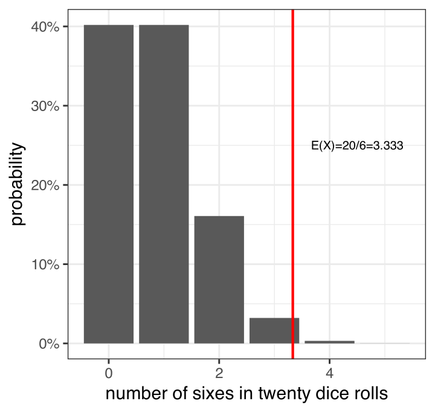
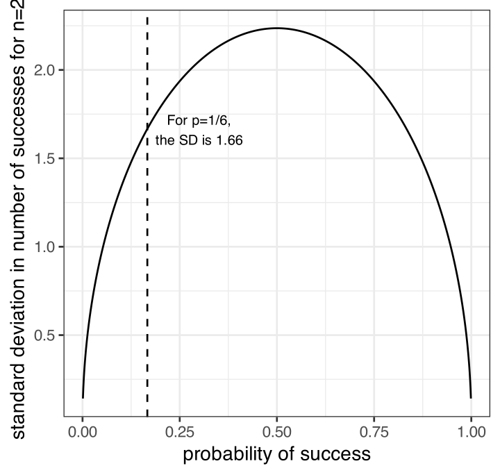
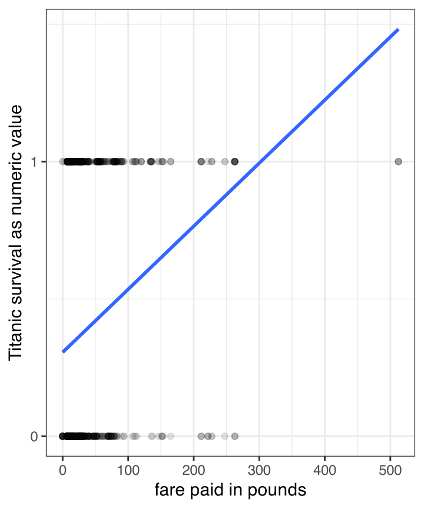
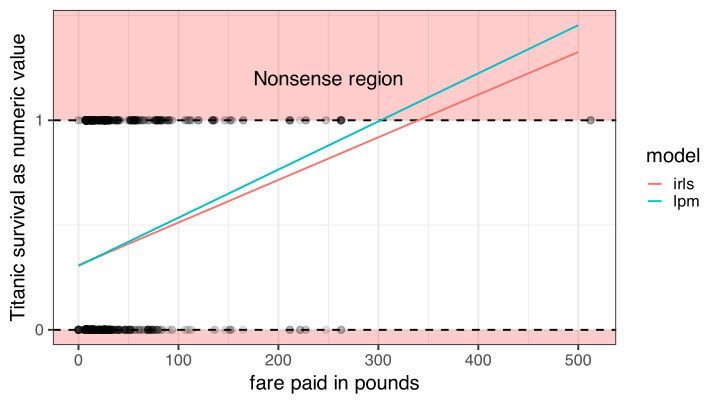
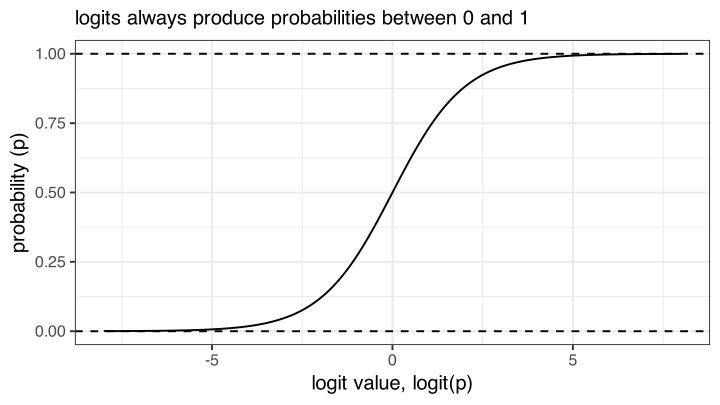
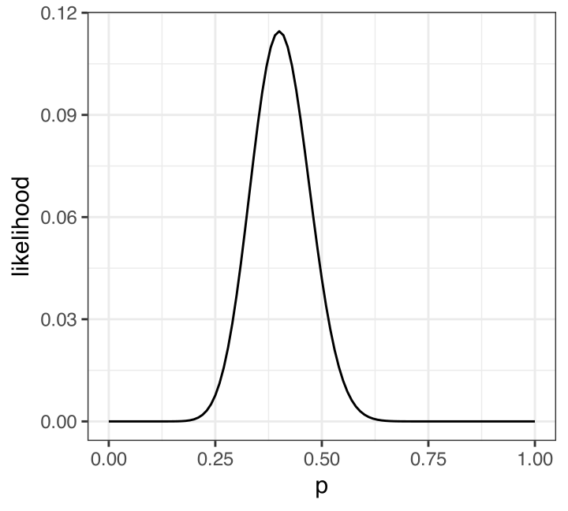
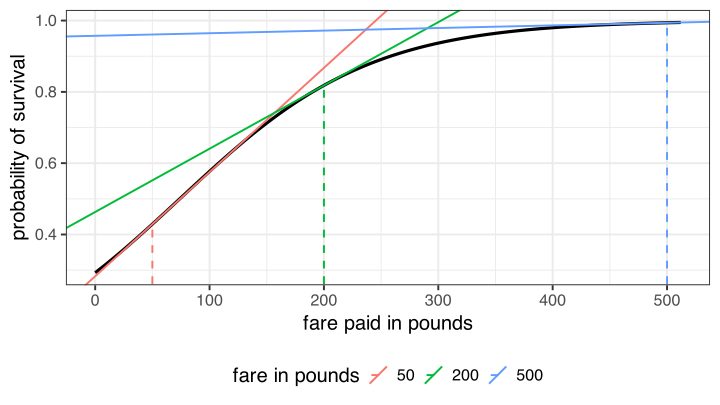
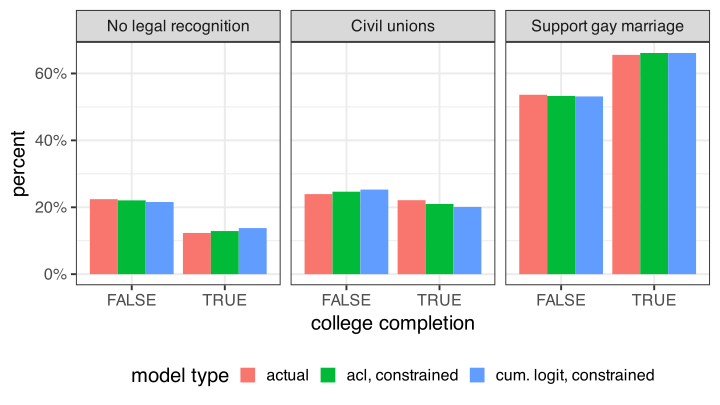

k <- 0:5
p <- 1/6
n <- 5
prob <- choose(n,k) * p^k * (1 - p)^(n - k)
ggplot(data.frame(k, prob), aes(x = k, y = prob))+
geom_col()+
scale_y_continuous(labels = scales::percent)+
labs(x = "number of sixes in five dice rolls",
y = "probability")Modeling Categorical Outcomes
Sociology 312/412/512, University of Oregon
Aaron Gullickson
Dichotomous Outcomes and The Binomial Distribution
Categorical dependent variables?
Life and death on the Titanic
- Survival of the Titanic is a dichotomous outcome, meaning it is a categorical variable with two possible outcomes.
- We can use a two-way table or mean differences to look at bivariate relationships.
- A linear model framework predicting survival would allow us to control for variables, add interaction, etc.
😕 We don’t know how to do that
- We know how to include categorical variables on the right hand side of regression model using indicator/dummy variables, but we can’t use OLS regression to predict categorical outcomes on the left-hand side of the equation.
- We need a linear model framework that allows us to predict categorical outcomes.
- In order to develop that framework, we need to develop our understanding of the actual data-generating process producing our outcomes.
The binomial distribution
The binomial distribution arises in situations where:
- \(n\) repeated independent trials are performed where the result of each trial is either a success or failure
- the probability of success on each trial is given by \(p\) and the probability of failure is \(1-p\)
- We are interested in a random variable \(X\) that gives the number of successes
🎲 Dice pools
A simple example of this type of process would be rolling five dice \((n=5)\) and counting the number of sixes \((p=0.167)\).
The binomial formula
The binomial formula gives the probability that the random variable representing the number of successes \(X\) will be some specific number \(k\). This formula is:
\[P(X=k)={n \choose k}p^k(1-p)^{n-k}\]
- The first part, \({n \choose k}\) is called “n choose k” and gives the number of ways that \(k\) successes and \(n-k\) failures can be combined.
- The second part, \(p^k(1-p)^{n-k}\) gives the probability of any particular sequence of \(k\) successes and \(n-k\) failures.
Probability of a sequence
When events are independent of one another, then the probability that they all occur is given by multiplying their individual probabilities together.
For example, if we wanted to know the probability of getting 2 successes and 3 failures for the dice rolling example we would just take:
\[(1/6)(1/6)(5/6)(5/6)(5/6)=(1/6)^2(5/6)^3=0.016\]
More generally, we can just say:
\[p^k(1-p)^{n-k}\]
How many possible sequences
Does 1.6% seem like a low probability of rolling exactly two sixes in five dice rolls?
That is because it is! This is only the probability of rolling any particular sequence of successes and failures. However, its possible to roll two successes and three failures in multiple permutations:
SSFFF, SFSFF, SFFSF, SFFFS, FSSFF, FSFSF, FSFFS, FFSSF, FFSFS, FFFSS
There are ten possible ways to combine two successes and three failures. Therefore, the total probability of rolling exactly two sixes in five dice rolls is:
\[10*(1/6)^2(5/6)^3=0.161\]
The \({n \choose k}\) formula provides a mathematical way to determine how many ways \(k\) successes can be distributed in \(n\) trials. The full formula is:
\[{n \choose k}=\frac{n!}{k!(n-k)!}\]
The exclamation points indicate a factorial which means you multiply that number by each integer lower than it in succession. For example:
\[4!=4*3*2*1\]
So for two successes in five trials:
\[{5 \choose 2}=\frac{5!}{2!(5-2)!}=\frac{5*4*3*2}{2*3*2}=5*2=10\]
::::
Calculate all the probabilities

What about twenty dice?

Features of the binomial distribution

The mean (or expected value) of the binomial distribution is always given by \((np)\).

The variance of the binomial distribution is given by: \((n)(p)(1-p)\)
The Bernoulli distribution
The Bernoulli distribution is a special case of the binomial distribution where \(n=1\). The only two possible outcomes for \(X\) in the Bernoulli distribution are 0 and 1.
\[E(X)=p\] \[V(X)=(p)(1-p)\]
Back to the Titanic
- We can think of each passenger on the Titanic as a single Bernoulli trial where the probability of success is given by \(p_i\).
- We don’t observe the \(p_i\) values for individual passengers. We only observe the “count”” of successes - 0 or 1.
- How can we attempt to recover predicted values of \(p_i\) that are related to our independent variables?
The Linear Probability Model
The linear probability model
😉 I lied, sort of
You can put a dichotomous outcome on the left-hand side of a linear model equation! R will estimate a model with a boolean variable on the left-hand side by turning that boolean variable into 0s and 1s.
Lets try this out with survival on the left hand side and fare paid on the right hand side.

The linear probability model interpreted
By treating survival as a 1 and death as a 0, we are implicitly modeling the probability of surviving as a function of fare:
\[\hat{p}_i=0.3055+0.0023(fare_i)\]
We would interpret the intercept and slope as follows: - The model predicts that individuals who paid no fare had a 30.55% probability of surviving the Titanic. - The model predicts that each additional pound paid in fare is associated with an increase of 0.23% in the probability of surviving the Titanic.
The linear probability model has two major flaws:
👮 IID Violation
The outcome variable is distributed as a bernoulli variable with a variance equal to \((p_i)(1-p_i)\). This will vary by observation and thus we have heteroscedasticity.
😕 Nonsense values
The linear probability model can produce predicted values that lie outside the range from 0 to 1. These are nonsensical values for a probability to take, which suggests that we aren’t using a very good model.
Using GLS to fix heteroscedasticity
Remember that Generalize Least Squares (GLS) applies a weighting matrix to model estimation to account for autocorrelation or heteroscedasticity. In the case of heteroscedasticity, the solution is to use the inverse of the variance for each observation as weights.
Since we know that the variance is given by \((p_i)(1-p_i)\), we can use the predicted values from an OLS regression model to derive weights:
[,1] [,2]
(Intercept) 0.30555135 0.324832333
fare 0.00229654 0.001457153Because we are using an estimate to generate the weights, this method is called feasible generalized least squares (FGLS) estimation.
Iterating to perfection
FGLS can be improved by iterating it multiple times until the results stop varying. At this point, we have performed iteratively reweighted least squares (IRLS) estimation which should correct for heteroscedasticity. Lets try iterating 8 times to see if that stabilizes the result.
model_last <- model_lpm
coefs <- coef(model_lpm)
for(i in 1:8) {
p_predicted <- model_last$fitted.values
p_predicted[p_predicted>=1] <- max(p_predicted[p_predicted<1])
w <- 1/(p_predicted*(1-p_predicted))
model_last <- update(model_last, weights=w)
coefs <- cbind(coefs,coef(model_last))
}
round(coefs, 4) coefs
(Intercept) 0.3056 0.3126 0.3071 0.3096 0.3082 0.3089 0.3085 0.3087 0.3086
fare 0.0023 0.0019 0.0021 0.0020 0.0021 0.0020 0.0020 0.0020 0.0020We reached convergence down to the fourth decimal place by the eighth iteration.
Predicted values still oustide the range

Should you use the LPM?
- No!
- While heteroscedasticity can theoretically be corrected, the range problem cannot be corrected.
- The LPM is a poor model because it doesn’t properly model the outcome which must be restricted to the range between zero and one.
The logit transformation
The LPM is bad but hints at the solution: we need a model that transforms probabilities so that the predicted probabilities always remains between 0 and 1.
The logit transformation will do this for us. The logit is the log-odds of success. It can be calculated as:
\[logit(p)=\log(\frac{p}{1-p})\]
- The part inside the log function is the odds of success, which is just the ratio of the probability of success to the probability of failure.
- Probabilities must lie between 0 and 1, but the odds lies between 0 and \(\infty\). If we log the odds then the resulting number will lie between \(-\infty\) and \(\infty\).
- For any real value of the logit \(g\), you can compute the probability by reversing the formula:
\[p=\frac{e^g}{1+e^g}\]
The logistic curve

Using the logit transformation
If we predict the logit of the probability of survival rather than the probability of survival, then all of the predicted probabilities will be between zero and one when reverse-transformed.
\[\log(\frac{p_i}{1-p_i})=\beta_0+\beta_1(fare_i)\]
The Catch
We cannot apply this transformation because we don’t actually have the \(p_i\) values to directly transform. All we have are the 1 and 0 values and we can’t logit transform these values.
We need a new kind of model and a new means of estimation.
Generalized Linear Models
Models as a data-generating process
Lets return to this particular set up of the linear model:
\[y_i=\hat{y}_i+\epsilon_i\] \[\hat{y_i}=\beta_0+\beta_1x_{i1}+\beta_2x_{i2}+\ldots+\beta_px_{ip}\]
There are several key concepts to understand here:
- The actual outcome \(y_i\) is treated as a combination of a structural part \((\hat{y}_i)\) and a stochastic part \((\epsilon_i)\).
- The structural part is predicted by a linear relationship of the independent variables to the dependent variable.
- The stochastic part comes from independent draws from some identical distribution.
Reformulating the Data-Generating Process
Lets assume that the error terms \(\epsilon_i\) are drawn from a normal distribution with some standard deviation \(\sigma\):
\[\epsilon_i \sim N(0,\sigma)\]
We can then rethink the data-generation process for \(y_i\) as reaching into a distribution:
\[y_i \sim N(\hat{y}_i,\sigma)\]
To get the value of \(y_i\) for any observation we reach into a normal distribution that is centered on the predicted value, but that always has the same standard deviation. The predicted value is given by a linear combination of the independent variables:
\[\hat{y_i}=\beta_0+\beta_1x_{i1}+\beta_2x_{i2}+\ldots+\beta_px_{ip}\]
GLM: link function and error distribution
We now have the two basic components of a Generalized Linear Model (GLM):
\[y_i \sim N(\hat{y}_i,\sigma)\] \[\hat{y_i}=\beta_0+\beta_1x_{i1}+\beta_2x_{i2}+\ldots+\beta_px_{ip}\]
Error distribution
\[y_i \sim N(\hat{y}_i,\sigma)\]
The error distribution defines how the distribution of the dependent variable is produced.
The error distribution in this case is normal, or (to be fancy) gaussian.
Link function
\[\hat{y_i}=\beta_0+\beta_1x_{i1}+\beta_2x_{i2}+\ldots+\beta_px_{ip}\]
The link function defines how the key parameter of the error distribution (in this case, the center at \(\hat{y_i}\)) is related to the independent variables.
In this case, the link function is a direct linear relationship. In GLM-speak, this is called the identity link.
Try out GLM
First the good old lm command using OLS regression to estimate:
Estimate Std. Error t value Pr(>|t|)
(Intercept) 1436.53197 369.017765 3.892853 0.000299574
median_age -27.56435 9.631534 -2.861886 0.006177354The glm command with the family option will allow you to run a model and specify the error distribution and link function.
Things to consider about the GLM
- Even though the results were identical, the
glmcommand is using a different technique called maximum likelihood estimation (MLE) to estimate coefficients. We will discuss how this works later. - Because the estimation technique is different for
glm, the summary statistics are different. Theglmcommand, for example, will not give you \(R^2\) by default. - Even though our GLM formulation assumed a normal distribution to the errors, this is not necessary in the case of OLS regression to get unbiased and efficient estimates.
- The GLM approach provides no real improvement over linear models estimated by OLS regression, but by varying up the error distribution and link function the GLM can work for the case of dichotomous dependent variables, as well as other categorical outcomes.
Creating our own disaster
In order to see how the GLM can be used to predict dichotomous outcomes, it will be useful to play god and create our own transatlantic ocean liner disaster.
We have 10000 brave souls on the Good Ship Lollipop which will sink on its maiden voyage due to ineptitude by the crew who were too busy eating candy to keep a look out for icebergs. We know the gender and the fare paid for all passengers.
Determining who lives and dies
Building the Model
Since we are playing god, we can define the relationship between survival and the variables of fare and gender.
To avoid problems of nonsensical probabilities, lets create a linear function of the log-odds of survival.
\[\log(\frac{p_i}{1-p_i})=0.12-0.6(male_i)+0.007(fare_i)\]

The logit (logistic regression) model
The link function
The survival variable \(y_i\) is just a set of ones and zeros that can thought of as being produced by a binomial distribution like so:
\[y_i \sim binom(1, p_i)\]
The error distribution
The key parameter in this distribution is \(p_i\) which we transform with a logit link, so that the independent variables are linearly related to the log of the odds of survival:
\[logit(p_i)=\log(\frac{p_i}{1-p_i})=\beta_0+\beta_1(male_i)+\beta_2(fare_i)\]
Estimate in R
use binomial with a logit link in the family argument.
Estimate Std. Error z value Pr(>|z|)
(Intercept) 0.1488 0.0381 3.9023 1e-04
genderMale -0.6266 0.0429 -14.6116 0e+00
fare 0.0067 0.0003 23.3701 0e+00The results are pretty close to what we specified. They differ a little due to sampling variability when we draw from the binomial.
But where did the estimates come from?
How does the GLM estimate model parameters?
It uses Maximum Likelihood Estimation (MLE).
The logic of MLE
- We have some data-generating process that produces a set of observed data (e.g. \(y_1,y_2,\ldots,y_n\)) and is governed by some set of parameters \(\theta\) (e.g. \(\beta_0,\beta_1,\beta_2\)).
- We ask what is the likelihood, given the process, that we observe the actual data that we have? This leads to the likelihood function, \(L(\theta)\), which gives the likelihood of the data as a function of the set of parameters.
- We have the data and want to estimate the parameters. Therefore, we choose a \(\hat{\theta}\) that maximizes \(L(\theta)\).
In practice, it is generally easier to find the maximum of the log-likelihood function, \(\log(L(\theta))\). The value of \(\hat{\theta}\) that maximimizes the log-likelihood function will always maximize the likelihood function as well.
A Simple Example: Flipping Coins
Lets say we flip a coin 50 times and observe 20 heads.
- The values of 50 trials and 20 heads are the data.
- The data-generating process is governed by the binomial distribution where the key parameter is \(p\), the probability of a heads on each trial.
The likelihood function
Because we know that the data-generating process is a binomial distribution, we also know that the likelihood function is for a given \(p\):
\[L(p)={50 \choose 20}p^{20}(1-p)^{30}\]
This formula is identical to the binomial formula except that it is now a function of \(p\) rather than \(n\) and \(k\).

Finding the maximum likelihood
First, transform the likelihood function into the log-likelihood function:
\[ \begin{aligned} \log L(p)&=\log({50 \choose 20}p^{20}(1-p)^{30})\\ \log L(p)&=\log {50 \choose 20} + 20 \log(p) + 30\log(1-p)\\ \end{aligned} \]
Then, take the derivative:
\[\frac{\partial \log L(p)}{\partial p}=\frac{20}{p}-\frac{30}{1-p}\]
Set this equal to zero and solve for \(p\) to find the maximum.
\[ \begin{aligned} 0&=\frac{20}{p}-\frac{30}{1-p}\\ \frac{30}{1-p}&=\frac{20}{p}\\ 30p&=20(1-p)\\ 30p&=20-20p\\ 50p&=20\\ p&=20/50=0.4 \end{aligned} \]
MLE for the logit model
- The data are the actual ones and zeros of \(y_i\) for the dependent variable and the matrix \(X\) of independent variables.
- The parameters of interest are the regression slopes and intercept \((\beta)\) of the model predicting the log-odds of a success, which can be converted into the probability of success for each observation, \(p_i\).
- We want to choose the \(\beta\) values that produce \(p_i\) values that maximize the likelihood of actually observing the ones and zero for \(y_i\) that we have.
- There is no closed-form solution for calculating the parameters of a GLM via MLE. Iterative techniques have to be used instead.
Likelihood formula for logit model
We can write the predicted log-odds of an observation by vector multiplication as \(\mathbf{x_i'\beta}\). This log odds can be converted into a probability as:
\[\hat{p}_i=F(\mathbf{x_i'\beta})=\frac{e^{\mathbf{x_i'\beta}}}{1+e^{\mathbf{x_i'\beta}}}\]
The likelihood of a particular observation \(i\) being equal to \(y_i\) (1 or 0) is given by the bernoulli distribution:
\[L_i=\hat{p}_i^{y_i}(1-\hat{p}_i)^{1-y_i}=F(\mathbf{x_i'\beta})^{y_i}(1-F(\mathbf{x_i'\beta}))^{1-y_i}\]
The log-likelihood is equal to:
\[\log L_i=y_i\log F(\mathbf{x_i'\beta})+(1-y_i) \log (1-F(\mathbf{x_i'\beta}))\]
The log-likelihood for all the observations is just the sum of these individual log-likelihoods:
\[\log L= \sum_{i=1}^n \log L_i= \sum_{i=1}^n y_i\log F(\mathbf{x_i'\beta})+(1-y_i) \log (1-F(\mathbf{x_i'\beta}))\]
Maximize this!
\[\log L = \sum_{i=1}^n y_i\log F(\mathbf{x_i'\beta})+(1-y_i) \log (1-F(\mathbf{x_i'\beta}))\]
- We know \(y_i\) and \(x_i\). We just need to choose the \(\beta\) vector that maximizes the log-likelihood.
- There is no closed-form solution to this problem. It can only be solved by iterative methods where we start with initial estimates and then iteratively adjust them until they no longer change.
- There are multiple algorithms that can do this, but the simplest is a form of iteratively-reweighted least squares (IRLS).
The IRLS Technique
The IRLS technique calculates the next iteration \((t+1)\) of \(\beta\) values from the current iteration \((t)\) as:
\[\beta^{(t+1)}=\mathbf{(X'W^{(t)}X)^{-1}X'W^{(t)}z^{(t)}}\]
Like, WLS this technique uses a weighting matrix \(\mathbf{W}\). This weighting matrix only has elements along the diagonal that are equal to:
\[w_i=\hat{p}_i(1-\hat{p}_i)\]
Where \(\hat{p}_i\) is the estimated probabilities from iteration \((t)\).
The \(\mathbf{z}\) vector is a transformed vector of the dependent variable where each element is given by:
\[z_i=\mathbf{x_i'\beta}+\frac{y_i-\hat{p}_i}{\hat{p}_i(1-\hat{p}_i)}\]
Initialize values assuming null model
Lets begin by setting up the X matrix and y values.
I calculate the average log odds of survival by the survival proportion and use this for my initial model.
Iteratively estimate \(\beta\)
beta.prev <- beta
for(i in 1:6) {
w <- p*(1-p)
z <- pred_lodds + (y-p)/w
W <- matrix(0, nrow(X), nrow(X))
diag(W) <- w
beta <- solve(t(X)%*%W%*%X)%*%(t(X)%*%W%*%z)
beta.prev <- cbind(beta.prev, beta)
pred_lodds <- X%*%beta
p <- exp(pred_lodds)/(1+exp(pred_lodds))
logL <- c(logL, sum(y*log(p)+(1-y)*log(1-p)))
}glm command does the same for you
Deviance = 1658.385 Iterations - 1
Deviance = 1654.789 Iterations - 2
Deviance = 1654.783 Iterations - 3
Deviance = 1654.783 Iterations - 4(Intercept) fare
-0.88402632 0.01247024 rep(1, nrow(titanic)) fare
-0.88402631 0.01247024 The Logit Model
The logit (logistic regression) model
The logit model is used to predict dichotomous outcomes. It is a specific kind of GLM with a binomial error distribution and a logit link. Formally:
\[y_i \sim binom(1, \hat{p}_i)\]
\[log(\frac{\hat{p}_i}{1-\hat{p}_i}) = \beta_0+\beta_1x_{i1}+\beta_2x_{i2}+\ldots+\beta_px_{ip}\]
- We are predicting the log-odds of “success” as a linear function of the independent variables.
- In terms of the interpretation of results, we have to consider both the log transformation and the use of odds. The key concept is the odds ratio.
We can fit the logit model with the glm command:
Estimate Std. Error z value Pr(>|z|)
(Intercept) -0.884 0.076 -11.708 0
fare 0.012 0.002 7.770 0- We specify the link and error distribution in the
familyargument. - I can just put in
survivaldirectly as the dependent variable in my model but it will then predict whichever is the second category as my “success” category. Since I want to be sure to predict survival, I explicitly use a boolean statement.
Survival by gender, two ways
Two-way table
0.24 men survived for every one that died. The odds of survival for women is 11.3 times higher.
Are these approaches the same?
From log-odds to odds
\[log(\frac{\hat{p}_i}{1-\hat{p}_i}) = -1.444+2.425(female_i)\]
The dependent variable is literally measured in the log-odds of survival, but this is not very intuitive. We can convert directly to odds by exponentiating both sides:
\[e^{log(\frac{\hat{p}_i}{1-\hat{p}_i})} = e^{-1.444+2.425(female_i)}\]
\[\frac{\hat{p}_i}{1-\hat{p}_i} = (e^{-1.444})(e^{2.425(female_i)})\]
\[\frac{\hat{p}_i}{1-\hat{p}_i} = (0.24)(11.3)^{(female_i)}\]
We now have a multiplicative model that describes the relationship between survival and sex.
Predicting odds for men and women
\[\frac{\hat{p}_i}{1-\hat{p}_i} = (0.24)(11.3)^{(female_i)}\]
What are the odds of survival for men?
\[\frac{\hat{p}_i}{1-\hat{p}_i} = (0.24)(11.3)^{0}=(0.24)(1)=0.24\]
What are the odds of survival for women?
\[\frac{\hat{p}_i}{1-\hat{p}_i} = (0.24)(11.3)^{1}=(0.24)(11.3)\]
- This model reproduces exactly the results we derived directly from the two-way table of survival by sex.
- The advantage of the linear model framework is that we can easily add in other variables, complex non-linear effects, interaction terms, etc.
Gender and passenger class models
I use the relevel function here to reset the reference category in order to simplify my model formulas. Then I run a bivariate model by gender, a model that controls for passenger class, and a model that interacts gender and passenger class.
Gender and passenger class models
| (1) | (2) | (3) | |
|---|---|---|---|
| (Intercept) | -1.444*** | -0.406** | -0.660*** |
| (0.088) | (0.137) | (0.158) | |
| sexFemale | 2.425*** | 2.515*** | 3.985*** |
| (0.136) | (0.147) | (0.481) | |
| pclassSecond | -0.881*** | -1.105*** | |
| (0.198) | (0.268) | ||
| pclassThird | -1.723*** | -1.058*** | |
| (0.171) | (0.201) | ||
| sexFemale × pclassSecond | -0.162 | ||
| (0.610) | |||
| sexFemale × pclassThird | -2.304*** | ||
| (0.516) | |||
| Num.Obs. | 1309 | 1309 | 1309 |
| + p < 0.1, * p < 0.05, ** p < 0.01, *** p < 0.001 | |||
- Holding constant passenger class, women were 12.4 \((e^{2.52})\) times more likely to survive than men.
- Holding constant gender, second class passengers were 59% \((1-e^{-.88})\) less likely than first class passengers to survive and third class passengers were 82% \((1-e^{-1.72})\) less likely than first class passengers to survive.
- Women in first class were 53.5 \((e^{3.98})\) times (!) more likely to survive than first class men. Among second class passengers, the ratio in survival by gender was slightly smaller at 45.6 \((e^{3.98-.16})\), but in third class it was much smaller at 5.4 \((e^{3.98-2.3})\).
- Men in second and third class were both about 65-67% \((1-e^{-1.06})\) or \((1-e^{-1.1})\) less likely to survive than first class men.
Interpreting quantitative independent variables
\[log(\frac{\hat{p}_i}{1-\hat{p}_i}) = -0.882+0.012(fare_i)\]
How do we interpret?
Lets exponentiate both sides again:
\[\frac{\hat{p}_i}{1-\hat{p}_i} = (e^{-0.882})(e^{0.012(fare_i)})\]
\[\frac{\hat{p}_i}{1-\hat{p}_i} = (0.414)(1.012)^{fare_i}\]
How do the odds of survival compare for someone who paid no fare, one pound, and two pounds?
\[ \begin{aligned} \frac{\hat{p}_i}{1-\hat{p}_i}& = (0.414)(1.012)^{0})=(0.414)\\ & = (0.414)(1.012)^{1}=(0.414)(1.012)\\ & = (0.414)(1.012)^{2}=(0.414)(1.012)(1.012)\\ \end{aligned} \]
Each one pound increase in fare is associated with a 1.2% increase in the odds of survival.
Predicted probabilities from logit model
A full example from Add Health
Estimate Std. Error z value Pr(>|z|)
(Intercept) -4.045 0.287 -14.078 0.000
grade 0.208 0.029 7.259 0.000
genderMale -0.071 0.092 -0.769 0.442
honor_societyYes -1.022 0.266 -3.846 0.000
alcohol_useDrinker 1.564 0.096 16.225 0.000
genderMale:honor_societyYes 0.467 0.381 1.226 0.220 (Intercept) grade
0.018 1.231
genderMale honor_societyYes
0.932 0.360
alcohol_useDrinker genderMale:honor_societyYes
4.777 1.595 Marginal effects in logit models
- In a logit model, the slope \((\beta)\) gives the marginal effect of \(x\) on the log-odds of success, not the probability of success.
- Many people prefer to think of the marginal effects of logit models in terms of the probability and so when people talk about the marginal effect of an independent variable in a logit regression model they typically mean the marginal effect of \(x\) on the probability.
- Because of the logistic curve, the marginal effect on the probability is not constant, but depends on what value of \(x\) you are currently at. As your predicted probability approaches one, the marginal effects will get smaller and smaller.
Different marginal effects on probability

Estimating marginal effects on probability
For a given vector of values of the independent variables given by \(\mathbf{x}\) and a vector of regression coefficients \(\mathbf{\beta}\), marginal effects can be estimated by first calculating the expected probability \(\hat{p}\):
\[\hat{p}=\frac{e^\mathbf{x'\beta}}{1+e^{\mathbf{x'\beta}}}\] The marginal effect of the \(k\)th independent variable in the model is then given by:
\[\hat{p}(1-\hat{p})\beta_k\]
model <- glm(survival ~ fare + age,
data = titanic,
family = binomial(logit))
#get predicted probabilty at mean fare and age
df <- data.frame(fare = mean(titanic$fare),
age = mean(titanic$age))
lodds <- predict(model, df)
p <- exp(lodds)/(1+exp(lodds))
#get marginal effects
p*(1-p)*coef(model)[c("fare","age")] fare age
0.003181225 -0.003548695 - The marginal effect of a one pound increase in fare when fare and age are at the mean is a 0.32% increase in the probability of survival.
- The marginal effect of a one year increase in age when fare and age are at the mean is a 0.35% decrease in the probability of survival.
Marginal effects for a categorical variable
The marginal effects for categorical variables are different. Typically you will estimate the difference in probability of survival across the categories when at the mean on all other variables.
1 2
0.1978424 0.7147825 2
0.5169401 When at the mean of age and fare, women’s probability of survival is 52 percentage points higher than men’s.
Assessing model fit with deviance
There is no \(R^2\) value for a generalized linear model. A model predicting categorical outcomes does not have residuals in the same sense as the linear model.
Most measures of model fit for GLMs rely up on the deviance of the model, or \(G^2\). The deviance is simply the log-likelihood of the model multiplied by negative 2:
\[G^2=-2(logL)\]
The smaller the deviance, the better the fit of the model, because the likelihood is getting higher.
Typically we are concerned with the deviance of three conceptual models:
- The deviance of the null model, \(G^2_0\) where we assign each observation the same probability \(p_i\).
- The deviance of the saturated model where the number of predictors is equal to the number of cases. This model would fit the data perfectly and therefore has a likelihood of one and a deviance of zero.
- The deviance of the current model \(G^2\) that we are currently fitting with \(p\) independent variables as predictors.
Two approaches
Pseudo \(R^2\)
We can calculate a measure that is similar to \(R^2\) which measures the proportion of deviance from the null model that is accounted for in the current model. This measure is also called McFadden’s D.
\[D=\frac{G^2_0-G^2}{G^2_0}\]
[1] 0.2141965Adding age as a predictor reduced the deviance from the null model by 21.4%.
Likelihood Ratio Test
The Likelihood Ratio Test (LRT) is the analog to the F-test for GLMs. The test statistic for the LRT is the reduction in deviance in the more complex model. Assuming the null hypothesis that all of the additional terms in the second model have no predictive power, this observed difference should come from a \(\chi^2\) distribution with degrees of freedom equal to the number of additional terms in the second model.
Using anova to do LRT
We can also use the anova command to do an LRT test if we add in the additional argument of test = "LRT":
Analysis of Deviance Table
Model: binomial, link: logit
Response: survival
Terms added sequentially (first to last)
Df Deviance Resid. Df Resid. Dev Pr(>Chi)
NULL 1308 1741.0
sex 1 372.92 1307 1368.1 < 2.2e-16 ***
---
Signif. codes: 0 '***' 0.001 '**' 0.01 '*' 0.05 '.' 0.1 ' ' 1You can also compare two non-null models by LRT
Analysis of Deviance Table
Model 1: survival ~ sex
Model 2: survival ~ sex + pclass
Resid. Df Resid. Dev Df Deviance Pr(>Chi)
1 1307 1368.1
2 1305 1257.2 2 110.88 < 2.2e-16 ***
---
Signif. codes: 0 '***' 0.001 '**' 0.01 '*' 0.05 '.' 0.1 ' ' 1BIC for GLMs
You can also calculate BIC for generalized linear models. The general formula to compare any two GLMs by BIC is:
\[BIC=(G^2_2-G^2_1)+(p_2-p_1)\log n\] The first part is the difference in deviance between the two models which measures goodness of fit and the second part is the parsimony penalty. If BIC is negative, model 2 is preferred to model 1. If BIC is positive, model 1 is preferred to model 2.
If you are comparing the current model to the null model, then BIC becomes:
\[BIC'=(G^2-G^2_0)+(p)\log n\]
You can use this value to compare any two models since the difference in BIC’ between any two models is equivalent to the BIC between them.
BIC Example
Write a function for BIC compared to the null:
[1] -96.52692[1] -96.52692Both approaches lead to the same BIC difference. We prefer the more complex model.
Model comparison
| (1) | (2) | (3) | (4) | (5) | |
|---|---|---|---|---|---|
| (Intercept) | -5.244*** | -4.328*** | -4.420*** | -4.638*** | -4.269*** |
| grade | 0.351*** | 0.358*** | 0.367*** | 0.370*** | 0.355*** |
| genderMale | 0.341*** | 0.262** | 0.168+ | 0.191* | |
| pseudo_gpa | -0.338*** | -0.343*** | -0.381*** | -0.399*** | |
| honor_societyYes | -0.017 | -0.025 | -0.123 | ||
| bandchoirYes | -0.343** | -0.379*** | -0.413*** | ||
| nsports | 0.118*** | 0.084* | |||
| nominations | 0.070*** | 0.073*** | |||
| Num.Obs. | 4397 | 4397 | 4397 | 4397 | 4397 |
| Log.Lik. | -1863.185 | -1846.234 | -1836.253 | -1817.179 | -1823.869 |
| F | 91.725 | 52.546 | 37.218 | 36.319 | 61.022 |
| R2 tjur | 0.05 | 0.05 | 0.06 | 0.07 | 0.06 |
| BIC | 3751.5 | 3734.4 | 3731.2 | 3701.5 | 3689.7 |
| + p < 0.1, * p < 0.05, ** p < 0.01, *** p < 0.001 | |||||
Separation
Separation can occur in logit models when the dichotomous outcome completely or nearly completely separates the values of an independent variable.
To create a problem of separation, I have changed all the values in the popularity dataset of band/choir members as smokers to non-smokers.
Non-smoker Smoker
No 2784 556
Yes 1057 0Now, none of the band/choir participants are smokers, leading to a zero cell.
The consequence of this separation is that the coefficient and standard error for the variable will “explode” into ridiculously large numbers.
Estimate Std. Error z value Pr(>|z|)
(Intercept) -1.611 0.046 -34.679 0.000
bandchoirYes -17.955 330.775 -0.054 0.957The very large coefficient and SE are clear signs of separation.
Fixing separation
In this case, the band/choir variable is dichotomous, so it is not possible to collapse categories. This model can be estimated with adjustments for separation using a penalized likelihood model. These types of models apply a penalty to the maximum likelihood estimation for very large coefficients. They have multiple uses but were developed originally to deal precisely with the problem of separation.
The logistf package provides a penalized likelihood logistic model in R:
logistf(formula = smoker ~ bandchoir, data = popularity.sep)
Model fitted by Penalized ML
Confidence intervals and p-values by Profile Likelihood
Coefficients:
(Intercept) bandchoirYes
-1.610156 -6.046654
Likelihood ratio test=324.2141 on 1 df, p=0, n=4397Models for Polytomous Outcomes
Predicting more than two categories
When we try to predict more than two categories, we have to think carefully about what kind of categorical variable we have:
Nominal
- If the categories of the dependent variable are unordered, we can use a multinomial logit model
- One category of the dependent variable will need to serve as the reference
- Model complexity increases rapidly with the number of categories
Ordinal
- If the categories of the dependent variable, are ordered we can use the cumulative (ordered) logit model or the adjacent category logit model
- Model complexity also increases rapidly with the number of categories, but we can apply constraints/assumptions that limit the complexity
American Community Survey data example
Race Question
Ancestry Question
Race reporting by white/black ancestry individuals
- We use a subset of data that includes all individuals who gave two ancestry responses that suggest both a white and black ancestry (e.g. “African American” and “Irish”).
- We will consider three race responses for these individuals:
- white
- black
- white and black
- How does the decision to identify racially vary by college completion?
Odds Ratios by College Completion
Yes No
Black 3993 23374
White 1598 12112
White/Black 2781 32899- The odds of identifying as black rather than white and black are twice as high among college-educated individuals than among those without a college degree. \[\frac{3993*32899}{2781*23374}=2.02\]
- The odds of identifying as white rather than white and black are 56% higher among college-educated individuals than among those without a college degree.\[\frac{1598*32899}{2781*12112}=1.56\]
- The odds of identifying as black rather than white are 29.5% (1.56/2.02) higher among college-educated individuals than among those without a college degree.
Two pairwise comparisons
Black vs. Multi
(Intercept) collegeYes
-0.3418180 0.7035502 (Intercept) collegeYes
0.7104775 2.0209147 The odds ratio of black vs. white/black identification is 2.02 \((e^{0.70355})\).
White vs. Multi
(Intercept) collegeYes
-0.9992456 0.4451878 (Intercept) collegeYes
0.3681571 1.5607833 The odds ratio of white vs. white/black identification is 1.56 \((e^{0.44519})\).
The multinomial logit model
- The multinomial logit model accomplishes the same result as two separate logit models, but estimates parameters using a single MLE procedure. This allows for a single measure of model log-likelihood and deviance.
- One of the categories of the dependent variable must serve as the reference category. In the example we are using, the white and black category served as the reference. The choice of reference is arbitrary.
- For a model with \(J\) categories of the dependent variable, we will get \(J-1\) coefficients for each independent variable.
- Multinomial logit models can be estimated in R with the
multinomfunction in thennetlibrary.
Call:
multinom(formula = racereport ~ college, data = wbreport, trace = FALSE)
Coefficients:
(Intercept) collegeYes
Black -0.3418185 0.7035608
White -0.9992481 0.4452018
Std. Errors:
(Intercept) collegeYes
Black 0.00855445 0.02613812
White 0.01062821 0.03314097
Residual Deviance: 157596.4
AIC: 157604.4 Formal multinomial model specification
\[\log(p_{ij}/p_{i1})=\beta_{0j}+\beta_{1j}x_{i1}+\beta_{2j}x_{i2}+\ldots+\beta_{pj}x_{ip}\]
- The model fits the log-odds of being in the \(j\)th outcome category relative to the reference outcome category as linear function of the independent variables.
- Each independent variable will have \(J-1\) coefficients rather than a single coefficient.
- Each \(\beta_j\) gives the log odds ratio of being in the \(j\)th outcome category rather than the reference outcome category for a one unit change in the given independent variable.
- The intercepts \(\beta_{0j}\) give the baseline odds of being in the \(j\)th outcome category rather than the reference outcome category when all the independent variables are zero.
Changing the reference category
If we want to change the reference category for the dependent variable, we can recalculate the regression coefficients as follows:
\[\beta_j-\beta_{j'}\]
Where \(j'\) is the new category that we want to set as the reference.
Lets try this out for our example, where we set the new reference to be identifying as black.
(Intercept) collegeYes
White/Black 0.3418185 -0.7035608
White -0.6574295 -0.2583589The white/black effects are just the inverse of the black effects.
Estimating predicted probabilities
Because there are multiple categories to consider, its often helpful to try to predict how the distribution of the dependent variable will change across different values of the independent variable. For a given set of independent variables \(X\), the probability \(P_i\) of being in category \(i\) is:
\[P_i=\frac{exp(X\beta_i)}{\sum_Jexp(X\beta_j)}\]
The trick here is to remember that the reference category will always have \(X\beta\) of zero which exponentiates to one. Therefore, the denominator will always include a one in the sum.
(Intercept) collegeYes
White/Black 0.0000000 0.0000000
Black -0.3418185 0.7035608
White -0.9992481 0.4452018White/Black Black White
0.4810853 0.3418001 0.1771145 White/Black Black White
0.3321764 0.4769484 0.1908752 Using predict to estimate probabilities
You can also do this in R with the predict command where you feed in a new data set to get predicted values.
White/Black Black White
1 0.4810853 0.3418001 0.1771145
2 0.3321764 0.4769484 0.1908752
White/Black Black White
No 0.4810850 0.3418001 0.1771149
Yes 0.3321787 0.4769470 0.1908743The results here are identical to the conditional distributions estimated by the two-way table.
A full multinomial logit model
(Intercept) collegeYes poorYes agectr agectrsq foreignYes female
Black -0.13009 -0.25373 0.09973 0.04543 -1e-05 0.64213 -0.03511
White -0.70266 -0.60671 -0.18088 0.05360 -7e-05 0.03437 -0.00989- The effects of college are very different with controls. College now seems more likely to push respondents away from both single-race identifications towards multiracial identification, although the effect is weaker for pushing away from black-alone identification than white-alone identification.
- How do we interpret the effects of age on racial identification? Age is centered on 22 years and a square is included, so its not easy to sort it out just from the coefficient values.
Estimating the effect of age
Lets get predicted probabilities for the effect of age from 22 to 75. We will estimate probabilities for the reference categories of the other variables (non-college, non-poor, male, native-born).
White/Black Black White
1 0.4213579 0.3699588 0.2086833
2 0.4096159 0.3763606 0.2140234
3 0.3979874 0.3826591 0.2193535
4 0.3864840 0.3888483 0.2246677
5 0.3751172 0.3949225 0.2299603
6 0.3638977 0.4008767 0.2352257Some data wrangling of predict output
# A tibble: 162 × 8
college poor foreign female agectr agectrsq race prob
<chr> <chr> <chr> <dbl> <dbl> <dbl> <chr> <dbl>
1 No No No 0 0 0 White/Black 0.421
2 No No No 0 0 0 Black 0.370
3 No No No 0 0 0 White 0.209
4 No No No 0 1 1 White/Black 0.410
5 No No No 0 1 1 Black 0.376
6 No No No 0 1 1 White 0.214
7 No No No 0 2 4 White/Black 0.398
8 No No No 0 2 4 Black 0.383
9 No No No 0 2 4 White 0.219
10 No No No 0 3 9 White/Black 0.386
# ℹ 152 more rowsTwo display techniques
Dealing with ordinal outcomes
Using the National Election Study data, lets look at attitudes toward gay marriage by whether a respondent completed a college degree.
FALSE TRUE
No legal recognition 579 204
Civil unions 618 366
Support gay marriage 1385 1085
FALSE TRUE
No legal recognition 0.2242448 0.1232628
Civil unions 0.2393493 0.2211480
Support gay marriage 0.5364059 0.6555891Two kinds of odds ratios
FALSE TRUE
No legal recognition 579 204
Civil unions 618 366
Support gay marriage 1385 1085Static reference
- Those with college education are 72% more likely to support civil unions rather than no legal recognition. \[\frac{366*579}{618*204}=1.68\]
- Those with college education are 128% more likely to support gay marriage rather than no legal recognition. \[\frac{1085*579}{1385*204}=2.22\]
Adjacent categories
- Those with college education are 72% more likely to support civil unions rather than no legal recognition. \[\frac{366*579}{618*204}=1.68\]
- Those with college education are 33% more likely to support gay marriage rather than civil unions. \[\frac{1085*618}{1385*366}=1.32\]
Naive multinomial model
We could just estimate this model as a multinomial model and ignore the ordinal nature of the dependent variable.
(Intercept) collegeTRUE
Civil unions 0.06511159 0.5194163
Support gay marriage 0.87210753 0.7991421 (Intercept) collegeTRUE
Civil unions 1.067278 1.681046
Support gay marriage 2.391947 2.223633The multinomial model gives us the static reference results.
Adjacent category logit model
The Adjacent Category Logit (ACL) Model estimates the log-odds ratio of being in the higher category \(j\) for each pair of adjacent categories \(j\) and \(j-1\):
\[\log(p_{ij}/p_{i(j-1)})=\beta_{0j}+\beta_{1j}x_{i1}+\beta_{2j}x_{i2}+\dots+\beta_{pj}x_{ip}\]
- The ACL takes advantage of the ordinal structure of the dependent variable to get the odds ratio between each adjacent set of categories on the ordinal scale.
- In general, we can estimate the parameters for an adjacent category logit model from multinomial model results by coding the lowest category as the reference and taking: \[\beta_j-\beta_{j-1}\] for all coefficients.
- In terms of model fit, the ACL is identical to the multinomial model. It just gives a more intuitive interpretation for ordinal responses.
- The multinomial model is sometimes called the Baseline Category Logit (BCL) model to more clearly distinguish it from the ACL.
Getting ACL from multinomial logit model
(Intercept) collegeTRUE
Civil unions 0.06511159 0.5194163
Support gay marriage 0.87210753 0.7991421 (Intercept) collegeTRUE
Civil unions 0.06511159 0.5194163
Support gay marriage 0.80699594 0.2797259 (Intercept) collegeTRUE
Civil unions 1.067278 1.681046
Support gay marriage 2.241165 1.322767Same results from two logit models
(Intercept) collegeTRUE
Civil unions 0.06511159 0.5194163
Support gay marriage 0.80699594 0.2797259(Intercept) collegeTRUE
0.06518598 0.51932736 (Intercept) collegeTRUE
0.806967 0.279735 The Cumulative Probability
Another way to think about differences in the distribution of an ordinal variable is by comparing the cumulative probability of being in a given category or higher.
FALSE TRUE
No legal recognition 0.2242448 0.1232628
Civil unions 0.2393493 0.2211480
Support gay marriage 0.5364059 0.6555891
FALSE TRUE
No legal recognition 1.0000000 1.0000000
Civil unions 0.7757552 0.8767372
Support gay marriage 0.5364059 0.6555891The Cumulative Odds
We can convert these cumulative probabilities into cumulative odds:
FALSE TRUE
No legal recognition Inf Inf
Civil unions 3.459413 7.112745
Support gay marriage 1.157059 1.903509- The odds for the first category are irrelevant because everyone is at least in the lowest category.
- Among those without a college degree the odds of supporting civil unions or more is 3.46 to one, whereas among the college-educated the same cumulative odds is 7.11. The odds ratio is about 2.05 (7.11/3.46).
- The odds of supporting gay marriage among those without a college degree is 1.16 to one. Among the college-educated the same odds is 1.90 to one. The odds ratio is about 1.64 (1.90/1.164).
Cumulative/Ordered Logit Model
\[log(P(y_i>=j)/P(y_i<j))=\alpha_j+\beta_{1j}x_{i1}+\beta_{2j}x_{i2}+\dots+\beta_{pj}x_{ip}\]
- The dependent variable is the cumulative log odds of being in the \(j\)th category or higher.
- The coefficients tell us how the the cumulative log odds of being in the \(j\)th or higher category change due to a one unit increase in \(x\).
- The \(\alpha_j\) are intercepts but they are often called the cut points. They define the cumulative distribution of ordinal responses when all the \(x\)’s are zero.
- Because this model allows the effect of each independent variable to be different at each cut-point, it has the same model fit as the multinomial model, but a different parameterization.
- Think of the model as testing all possible dichotomous collapsings of your dependent variable simultaneously.
Estimating the cumulative logit model
FALSE TRUE
Civil unions 1.2410989 1.9618883
Support gay marriage 0.1458817 0.6436989The first column gives the cut points for the model of 0.85 and -0.49. These define the cumulative log odds among the non-college educated. The log-odds ratios for the college educated are given by the difference in log-odds.
Interpreting terms in cumulative logit model
cut college
Civil unions 3.459413 2.056056
Support gay marriage 1.157059 1.645126- Among the non-college educated, the odds of supporting civil unions or more are 3.46 to one, and the odds of supporting gay marriage fully are 1.16 to one.
- The odds of supporting civil unions or more are approximately double (2.06) for the college educated than the non-college educated.
- The odds of supporting gay marriage are 65% higher (1.65) for the college educated than the non-college educated.
Same results from logit models
cut college
Civil unions 1.2410989 0.7207894
Support gay marriage 0.1458817 0.4978172(Intercept) collegeTRUE
1.2410989 0.7207894 (Intercept) collegeTRUE
0.1458817 0.4978172 Estimating polytmous models with vglm
The VGAM library includes a function called vglm for estimating “vector generalized linear models.” This package can be used to estimate a variety of nominal and ordinal response models.
Multinomial logit (Baseline category logit) model:
Adjacent category logit model:
vglm model output
(Intercept):1 (Intercept):2 collegeTRUE:1 collegeTRUE:2
0.06518598 0.87215294 0.51932736 0.79906233 (Intercept):1 (Intercept):2 collegeTRUE:1 collegeTRUE:2
0.06518598 0.80696696 0.51932736 0.27973497 (Intercept):1 (Intercept):2 collegeTRUE:1 collegeTRUE:2
1.2410989 0.1458817 0.7207894 0.4978172 Constraints in ordinal models
- For the ACL and cumulative logit model, it is possible to apply a simple constraint that the effect of college education is the same at each cut point. This is the assumption of proportional odds.
- The ACL and cumulative logit models estimated under this constraint are no longer identical in terms of fit and neither will fit the table exactly.
- This constrained model has the advantage of being more parsimonious and having less coefficients to interpret
- This constrained model has the disadvantage of making an assumption. In our case, the assumption seems problematic because we can see substantial differences in the effect of college education at different cut points.
Constrained models with vglm
Constrained models can be estimating by changing the parallel option for family to TRUE:
(Intercept):1 (Intercept):2 collegeTRUE
0.1110181 0.7705871 0.3767878 (Intercept):1 (Intercept):2 collegeTRUE
1.2904057 0.1255639 0.5434850 [1] 8098.708 8098.708 8100.939 8107.540Predicted probabilities across models

Fuller models
Cum. Logit
|
ACL
|
|||
|---|---|---|---|---|
| Civil Union vs. No | Support vs. Civil Union | Civil Union vs. No | Support vs. Civil Union | |
| (Intercept) | 1.918*** | 0.410*** | 0.733*** | 0.819*** |
| collegeTRUE | 0.531*** | 0.355*** | 0.347** | 0.230** |
| religEvangelical Protestant | -1.695*** | -1.261*** | -1.291*** | -0.684*** |
| religCatholic | 0.335* | 0.249* | 0.200 | 0.189+ |
| religJewish | 0.403 | 0.966** | -0.609 | 1.182** |
| religNon-religious | 1.635*** | 1.409*** | 0.688* | 1.247*** |
| religOther | -0.419** | 0.167 | -0.762*** | 0.463*** |
| I(age - 40) | -0.013*** | -0.026*** | 0.009+ | -0.031*** |
| I((age - 40)^2) | -0.000 | 0.000+ | -0.000* | 0.000** |
| Num.Obs. | 4237 | 4237 | ||
| BIC | 7372.7 | 7375.3 | ||
| + p < 0.1, * p < 0.05, ** p < 0.01, *** p < 0.001 | ||||
| Cum. Logit | ACL | |
|---|---|---|
| (Intercept) × 1 | 1.795*** | 0.587*** |
| (Intercept) × 2 | 0.432*** | 0.903*** |
| collegeTRUE | 0.395*** | 0.274*** |
| religEvangelical Protestant | -1.420*** | -0.941*** |
| religCatholic | 0.254** | 0.181** |
| religJewish | 0.869** | 0.532* |
| religNon-religious | 1.376*** | 1.059*** |
| religOther | 0.054 | -0.028 |
| I(age - 40) | -0.023*** | -0.015*** |
| I((age - 40)^2) | 0.000 | 0.000 |
| Num.Obs. | 4237 | 4237 |
| BIC | 7391.9 | 7394.9 |
| + p < 0.1, * p < 0.05, ** p < 0.01, *** p < 0.001 | ||
Sociology 312/412/512, University of Oregon